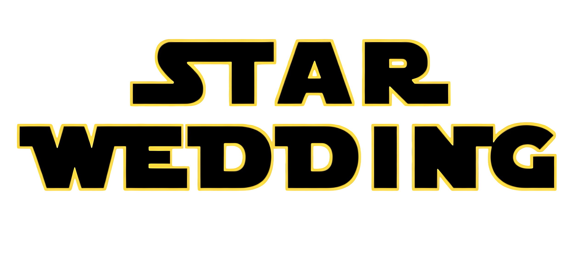

遠い昔 はるかかなたの
公園で・・・
公園で・・・

Takuto＆Yuka
Weddingの夜明け
これは、スターウォー〇風のスクロールでお届けする、ささやかな余興です。
まず本日は遠いところからお越し頂きありがとうございます。
しかも1，2か月前とか急にも関わらず...
にしても今日はこんなに晴れるとは、
飲み物とか出ると思うのでじゃんじゃん飲んでください。
とりあえず、これからもよろしくお願いします。
それでは、銀河のどこかでまたお会いしましょう。

これは、スターウォー〇風のスクロールでお届けする、ささやかな余興です。
まず本日は遠いところからお越し頂きありがとうございます。
しかも1，2か月前とか急にも関わらず...
にしても今日はこんなに晴れるとは、
飲み物とか出ると思うのでじゃんじゃん飲んでください。
とりあえず、これからもよろしくお願いします。
それでは、銀河のどこかでまたお会いしましょう。